Hidden Markov Models
hmm.RmdTheoretical Background
Hidden Markov models (HMM’s) constitute a class of statistical models, where we assume that each observed variable (or emission) \(\mathsf{X}_1,\mathsf{X}_2,\ldots,\mathsf{X}_n\) depends on latent, unobserved variables \(\mathsf{C}_1,\mathsf{C}_2,\ldots,\mathsf{C}_n\), where these unobserved variables constitute a Markov chain on the finite state space \(\{1, 2, \ldots, m\}\) for some \(m\in \mathbb{N}\).
This is useful for modelling a time or sequence dependence of the observed variables. For example, one might consider the number of customers arriving in a store at given time intervals as the observed emissions, where the underlying hidden states would then describe the general ``level of busyness’’ (here, it might be more appropriate with an inhomogeneous Markov chain, but we digress).
As such, in a hidden Markov model, we have that \(\mathsf{X}_i\mid \mathsf{C}_i=j\sim \mathbb{P}_j\) for some set of distributions \(\{\mathbb{P}_1,\mathbb{P}_2,\ldots,\mathbb{P}_m\}\). Most commonly, these distributions are all parametric, and usually from the same distribution family (e.g. normal, Poisson etc.), but with different parameters.
We therefore desire a method for estimating these parameters along with the parameters of the Markov chain \(\{\mathsf{C}_1,\mathsf{C}_2,\ldots,\mathsf{C}_n\}\), i.e. the transition probabilities and the initial distribution (the distribution vector of \(\mathsf{C}_1\)). As is often the case when working with latent data, the EM-algorithm is very applicable here. In particular, the log-likelihood of the complete data set (including the latent unobserved data) is of the form \[ \ell(\delta, \Gamma, \{\theta_i\}_{i=1}^m\mid x, c) =A(\delta)+B(\Gamma)+\sum_{i=1}^{m}\sum_{j=1}^{n}\log f_i(x_j\mid\theta_i)1_{\{c_j=i\}}. \] Here, \(\delta\) and \(\Gamma\) denote the distribution vector of \(\mathsf{C}_1\) and the transition probability matrix, respectively. Their optimization is very general and not very relevant to the use of this package, so we skip the details here. Finally, \(f_i(\cdot\mid\theta_i)\) denotes the density of \(\mathbb{P}_i\) with the parameter \(\theta_i\).
Replacing the terms in this log-likelihood depending on the latent data with their conditional expectations given the observed data and some other set of parameters, we arrive at the conclusion that in order to maximize the likelihood, we must maximize \[ \sum_{j=1}^{n}\log f_i(x_j\mid\theta_i)\mathbb{P}_{\theta'}(\mathsf{C}_j=i\mid \mathsf{X}_k=x_k\text{ for }k=1,2,\ldots,n) \] with respect to \(\theta_i\) for each \(i=1,2,\ldots,m\). In this package (when not using predefined distribution families), this amounts to specifying functions \(M_i\), which given \((x_1, u_1),(x_2, u_2),\ldots,(x_n, u_n)\) where \(u_k\in[0, 1]\) for all \(k\) returns the value of \(\theta_i\) maximizing \[ \sum_{j=1}^{n}\log f_i(x_j\mid\theta)u_j. \] If \(M_1=M_2=\cdots=M_m:=M\) (such as in the case of different distributions from the same parametric family), supplying just \(M\) is sufficient.
Description and reasoning of the package structure
In this package, we strive to implement the most important methods for modelling and fitting HMM’s in a way that is sensible for most seasoned R-users. In particular, we aim to mimic the lm function from the stats package, where calling the functions defines a certain S3-object which then has methods for many of the generic functions in R. The hope here being that users will only have to familiarize themselves with the syntax of this one function and utilizing the familiar generic functions for all other aspects.
As such, this package only introduces one “new” function: hmm. Calling this will initialize a new instance of the hmm-class with various attributes. If data is supplied, and estimation is desired, the function will automatically find approximate maximum likelihood estimates using the EM-algorithm as described above.
Finally, in order to make the hmm function as user friendly as possible, there are several built-in common distributions to choose from, which hopefully cover many use-cases.
Examples of use
Basic fitting of a hidden Markov model
Consider the data-set quakes consisting of the number of significant earthquakes (magnitude \(7\) or higher) in each year between 1900 and 2006. This is a prime candidate for fitting to a HMM, as it appears as though there are periods of high and low geological activity. It seems a fitting model since we have count data that each observation should have a Poisson distribution, i.e. we fit the model \[
\mathsf{X}_j\mid\mathsf{C}_j=i\sim\mathrm{Poisson}(\lambda_i),\quad i=1,\ldots,m, \quad j=1,\ldots,n.
\] Fitting it in R using this package is easy:
# Load package and data
library(hmm)
quakes <- read.table("http://www.hmms-for-time-series.de/second/data/earthquakes.txt")$V2
# Define initial values for all parameters involved to be used in the EM-algo
Gamma <- rbind(c(0.9, 0.1), c(0.1, 0.9))
delta <- c(1, 1)/2
lambda <- c(10, 30)
# Fit model
hmm.EQ <- hmm(quakes, Gamma, delta, dist='poisson', lambda=lambda)To evaluate, we may first look at a summary and plots
# Print summary
summary(hmm.EQ)
#> Hidden Markov Model with 2 states.
#> Residuals:
#> 0% 25% 50% 75% 100%
#> -9.4183026 -3.4183026 -0.4183026 2.5816974 14.9870731
#>
#> Initial distribution of Markov chain is:
#> [1] 1 0
#>
#> Transition probability matrix of Markov chain is:
#> 1 2
#> 1 0.9283388 0.07166123
#> 2 0.1189227 0.88107734
#>
#> Emission distribution family is poisson with parameters:
#> lambda
#> 1 15.41830
#> 2 26.01293
#>
#> Model was fitted using the EM-algorithm in 29 steps.
#> The log-likelihood of the model is -341.8787 and the AIC and BIC are 693.7574 and 707.1216 respectively.
# Make plots
plot(hmm.EQ, type='h', lwd=2, cols=c('tomato', 'steelblue'))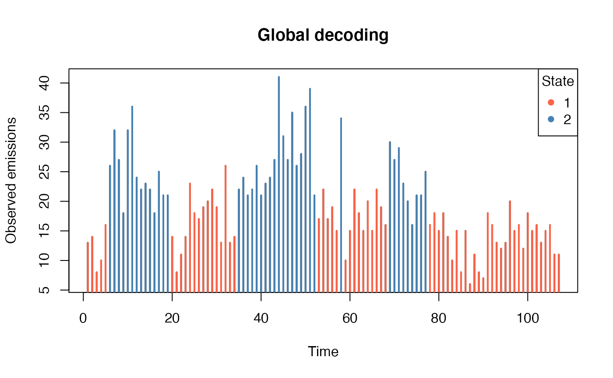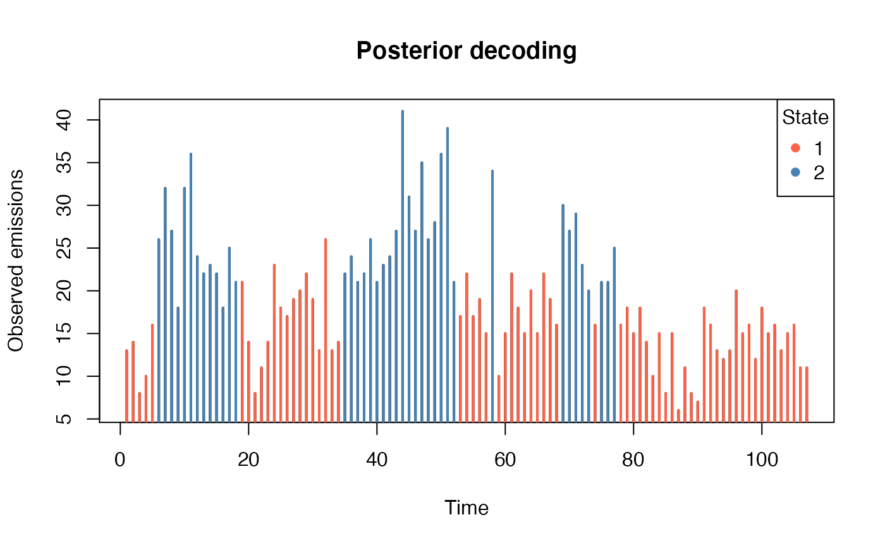 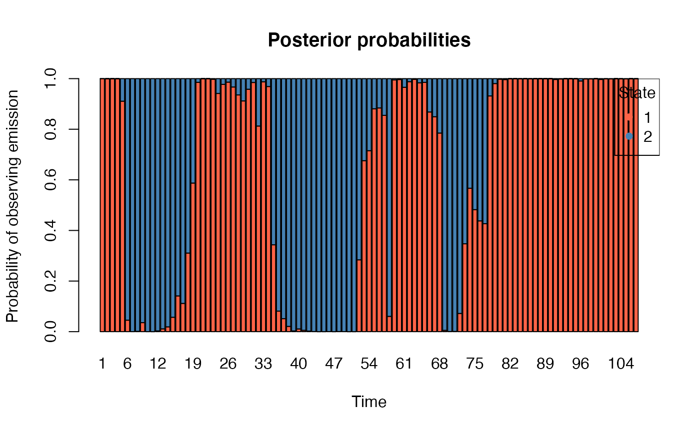
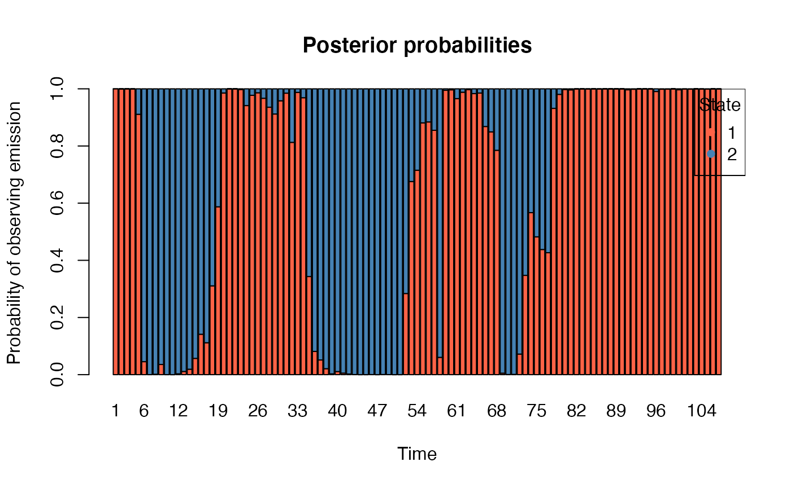
We see that our initial estimate guesses were not far off, and the plots seem to decently separate times of high and low geological activity.
We should note, though, that we somewhat arbitrarily chose \(m=2\) in this fit. Could we do better with more states? To explore this, we fit for different values of \(m\) and plot the AIC and BIC corresponding to each model:
# Define function for easily calculating AIC and BIC for each number of states
m_state_model <- function(m){
Gamma <- matrix(0.1, nrow=m, ncol=m) + diag(m) * (1-m * 0.1)
delta <- rep(1/m, m)
lambda <- seq(10, 30, length.out=m)
M <- hmm(quakes, Gamma, delta, dist='poisson', lambda=lambda)
return(c(AIC(M), BIC(M)))
}
res <- sapply(1:6, m_state_model)
# Plot results
plot(1:6, seq(min(res), max(res), length.out=6), type='n', xlab='No. of states', ylab='')
lines(1:6, res[1, ], type='b', col='steelblue')
lines(1:6, res[2, ], type='b', col='tomato')
legend('topleft', legend=c('AIC', 'BIC'), lty=1, col=c('steelblue', 'tomato'))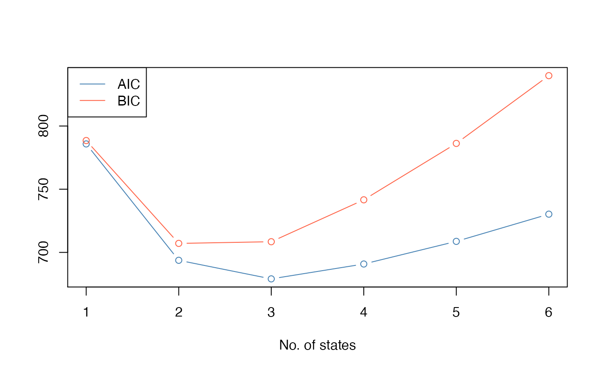
It seems as though a model with \(m=3\) actually fits better. Fitting this, we find
# Fit model
Gamma <- rbind(c(0.8, 0.1, 0.1),
c(0.1, 0.8, 0.1),
c(0.1, 0.1, 0.8))
delta <- c(1, 1, 1)/3
lambda <- c(10, 20, 30)
hmm.EQ.3 <- hmm(quakes, Gamma, delta, dist='poisson', lambda=lambda)
# Summarize
summary(hmm.EQ.3)
#> Hidden Markov Model with 3 states.
#> Residuals:
#> 0% 25% 50% 75% 100%
#> -11.7116273 -2.7135218 0.2864782 2.2864782 14.2864782
#>
#> Initial distribution of Markov chain is:
#> [1] 1 0 0
#>
#> Transition probability matrix of Markov chain is:
#> 1 2 3
#> 1 9.392575e-01 0.03217851 0.02856396
#> 2 4.042751e-02 0.90633291 0.05323958
#> 3 1.881994e-10 0.19042491 0.80957509
#>
#> Emission distribution family is poisson with parameters:
#> lambda
#> 1 13.13366
#> 2 19.71352
#> 3 29.71163
#>
#> Model was fitted using the EM-algorithm in 16 steps.
#> The log-likelihood of the model is -328.5275 and the AIC and BIC are 679.055 and 708.4561 respectively.
plot(hmm.EQ.3, type='h', lwd=2, cols=c('tomato', 'steelblue', 'purple')) 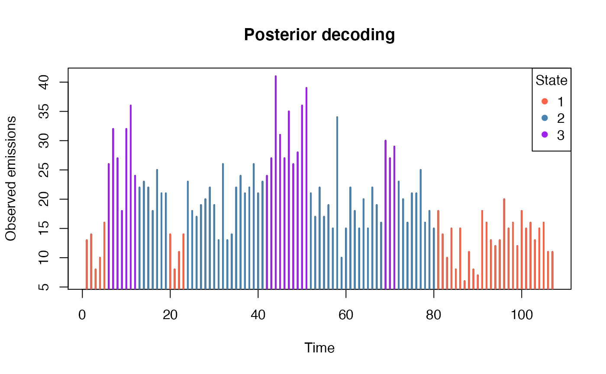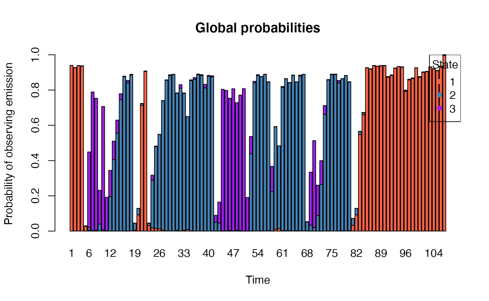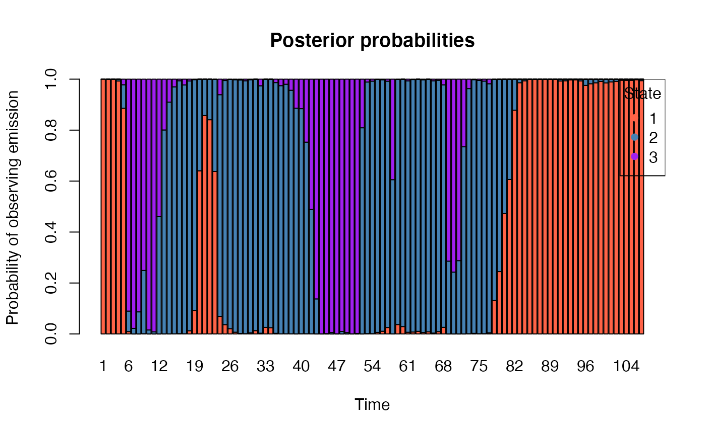
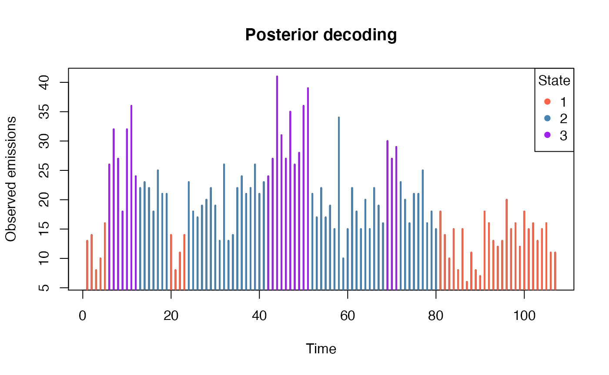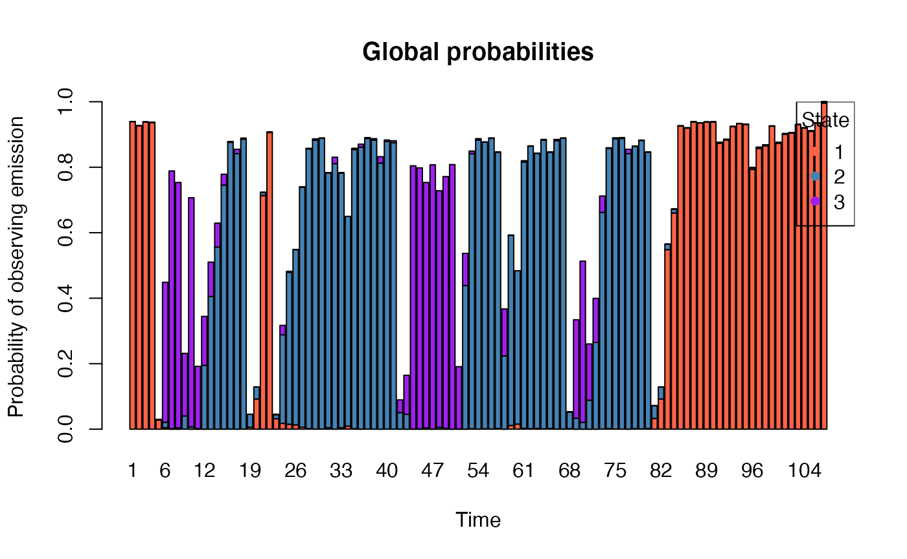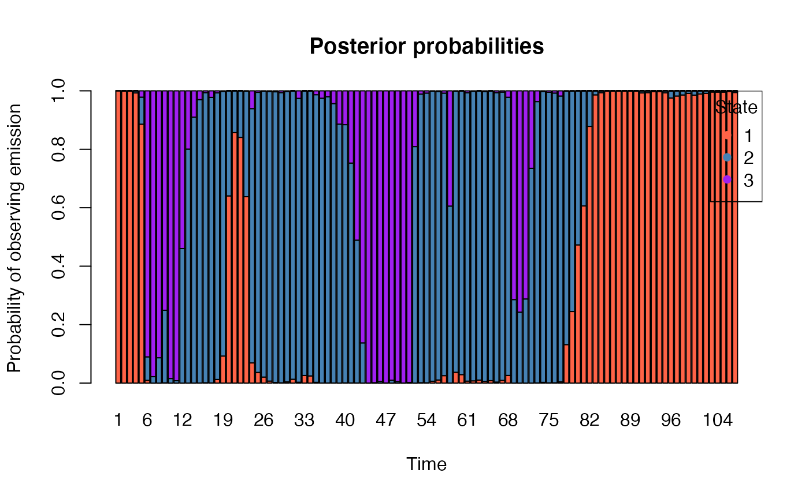
Simulating data
Another key part of this package is simulating a variety of HMM’s. This is made easy using the generic simulate function. We first specify a normal HMM (i.e. where all emission distributions are normal) without data, from which we can then simulate.
# Specify model
Gamma <- rbind(c(0.5, 0.25, 0.25),
c(0.1, 0.8 , 0.1),
c( 0, 0.2 , 0.8))
delta <- c(1, 0, 0)
mean <- c(0, 5, 10)
sd <- rep(1, 3)
hmm.normal <- hmm(NULL, Gamma=Gamma, delta=delta, dist='normal', mean=mean, sd=sd)
# Summarize model
summary(hmm.normal)
#> Hidden Markov Model with 3 states.
#> Initial distribution of Markov chain is:
#> [1] 1 0 0
#>
#> Transition probability matrix of Markov chain is:
#> 1 2 3
#> 1 0.5 0.25 0.25
#> 2 0.1 0.80 0.10
#> 3 0.0 0.20 0.80
#>
#> Emission distribution family is normal with parameters:
#> mean sd
#> 1 0 1
#> 2 5 1
#> 3 10 1
# Simulate from model
X <- simulate(hmm.normal, nsim=100)
# Plot simulation
plot(X, pch=20, col='tomato')
abline(h=c(0, 5, 10), lty=2)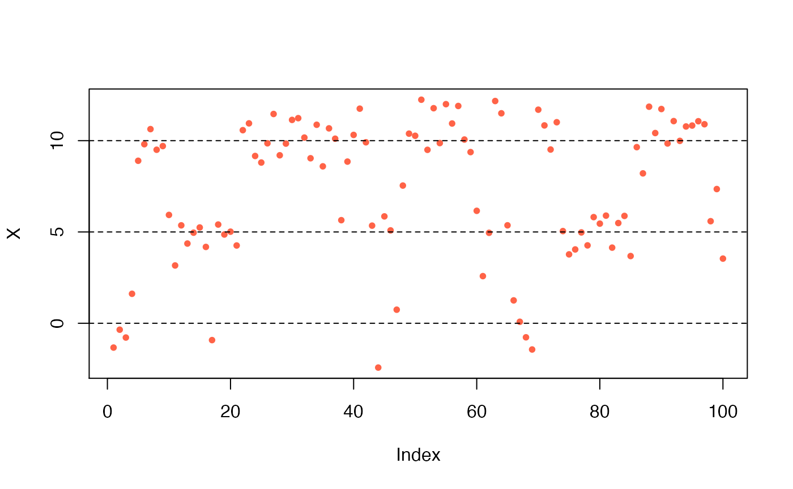
Furthermore, we may also include the hidden states in our simulation for model checking:
# Simulate from model
Z <- simulate(hmm.normal, nsim=100, include_state=TRUE)
# Separate into emission and hidden observation
X <- Z[1:100]
G <- Z[101:200]
# Plot simulation
plot(X, pch=20, col=c('steelblue', 'tomato', 'purple')[G])
abline(h=c(0, 5, 10), lty=2, col=c('steelblue', 'tomato', 'purple'))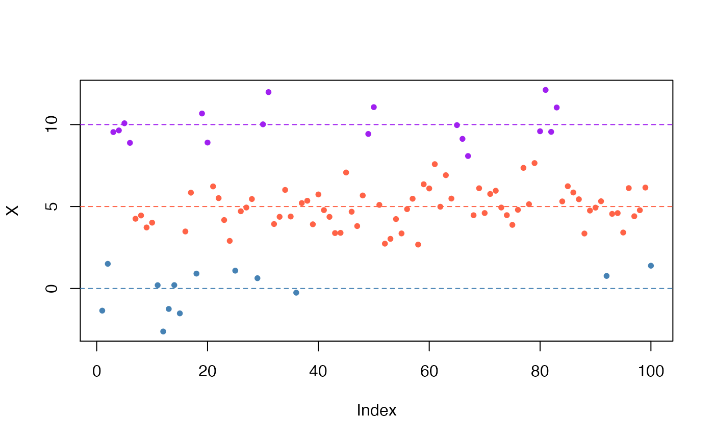
Defining custom models
If one wishes to fit/define HMM’s where the emissions are not from one of the included standard distribution families, one can define a custom distribution. To this, one must supply a function (or list of functions) denoting the different densities, a function to generate maximum likelihood estimates (as described in the first section) and a function for generating random observations. We illustrate this with the following two examples, first where all the distributions are from the same parametric family, \(\mathbb{P}_i=\mathrm{Uniform}[0, \theta_i]\):
# Define custom functions
lls <- function(x, param){dunif(x, 0, param)}
lls_mle <- function(x, u){max(x)}
rdist <- function(n, param){runif(n, 0, param)}
# Define remaining parameters
Gamma <- rbind(c(0.5, 0.25, 0.25),
c(0.1, 0.8 , 0.1),
c( 0, 0.2 , 0.8))
delta <- c(1, 0, 0)
theta <- list(1, 5, 10)
# Define model
hmm.unif <- hmm(NULL, Gamma=Gamma, delta=delta, lls=lls, param_lls=theta, lls_mle=lls_mle, rdist=rdist)
# Summarize model
summary(hmm.unif)
#> Hidden Markov Model with 3 states.
#> Initial distribution of Markov chain is:
#> [1] 1 0 0
#>
#> Transition probability matrix of Markov chain is:
#> 1 2 3
#> 1 0.5 0.25 0.25
#> 2 0.1 0.80 0.10
#> 3 0.0 0.20 0.80
#>
#> Emission distribution family is custom with parameters:
#> Param. 1
#> 1 1
#> 2 5
#> 3 10
# Simulate from model
Z <- simulate(hmm.unif, nsim=200, include_state=TRUE)
X <- Z[1:200]
G <- Z[201:400]
# Plot simulation
plot(X, pch=20, col=c('steelblue', 'tomato', 'purple')[G])
abline(h=c(1, 5, 10), lty=2, col=c('steelblue', 'tomato', 'purple'))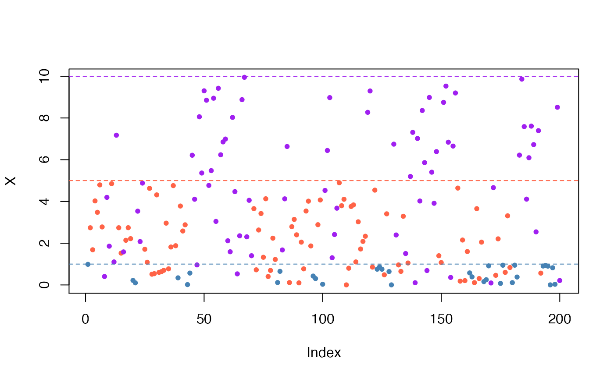
Finally, we consider a model where the distributions are from two different families, namely where \(\mathbb{P}_1=N(0, 1)\) and \(\mathbb{P}_2=\mathrm{Exponential}(1)\).
# Define custom functions
lls <- list(function(x, param){dnorm(x, param[1], param[2])},
function(x, param){dexp(x, param)})
lls_mle <- list(function(x, u){mean_hat <- sum(u*x) / sum(u); c(mean_hat, sqrt(sum(u*(x-mean_hat)^2) / sum(u)))},
function(x, u){sum(u)/sum(u*x)})
rdist <- list(function(n, param){do.call(rnorm, args=as.list(c(n, param)))},
function(n, param){rexp(n, param)})
# Define remaining parameters
Gamma <- rbind(c(0.2, 0.8),
c(0.8, 0.2))
delta <- c(1, 1)/2
param <- list(c(0, 1),
1)
# Define model
hmm.mixture <- hmm(NULL, Gamma=Gamma, delta=delta, lls=lls, param_lls=param, lls_mle=lls_mle, rdist=rdist)
# Summarize model
summary(hmm.mixture)
#> Hidden Markov Model with 2 states.
#> Initial distribution of Markov chain is:
#> [1] 0.5 0.5
#>
#> Transition probability matrix of Markov chain is:
#> 1 2
#> 1 0.2 0.8
#> 2 0.8 0.2
#>
#> Emission distribution family is custom with parameters:
#> Param. 1 Param. 2
#> 1 0 1
#> 2 1
# Simulate from model
Z <- simulate(hmm.mixture, nsim=200, include_state=TRUE)
X <- Z[1:200]
G <- Z[201:400]
# Plot simulation
plot(X, pch=20, col=c('steelblue', 'tomato', 'purple')[G])
abline(h=0, lty=2)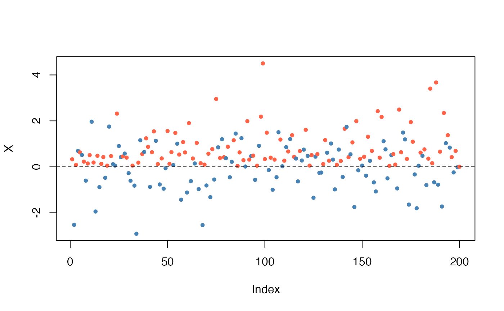
# Fit simulated data to model (for fun)
hmm.mixture.fitted <- hmm(X, Gamma=Gamma, delta=delta, lls=lls, param_lls=param, lls_mle=lls_mle, rdist=rdist)
summary(hmm.mixture.fitted)
#> Hidden Markov Model with 2 states.
#> Residuals:
#> 0% 25% 50% 75% 100%
#> -2.9325681 -0.5946432 -0.2437927 0.5659771 3.7752822
#>
#> Initial distribution of Markov chain is:
#> [1] 0 1
#>
#> Transition probability matrix of Markov chain is:
#> 1 2
#> 1 0.2178368 0.7821632
#> 2 0.7750314 0.2249686
#>
#> Emission distribution family is custom with parameters:
#> Param. 1 Param. 2
#> 1 0.01063034 1.093135
#> 2 1.28915574
#>
#> Model was fitted using the EM-algorithm in 36 steps.
#> The log-likelihood of the model is -263.7385 and the AIC and BIC are 539.4769 and 559.2668 respectively.
plot(hmm.mixture.fitted)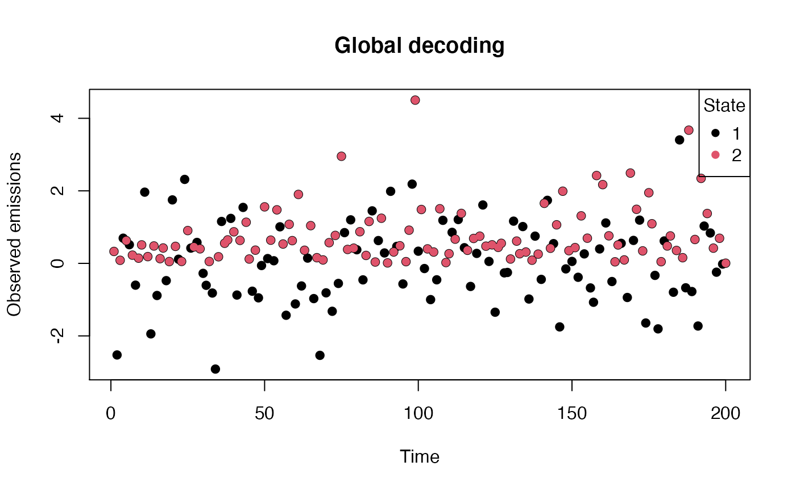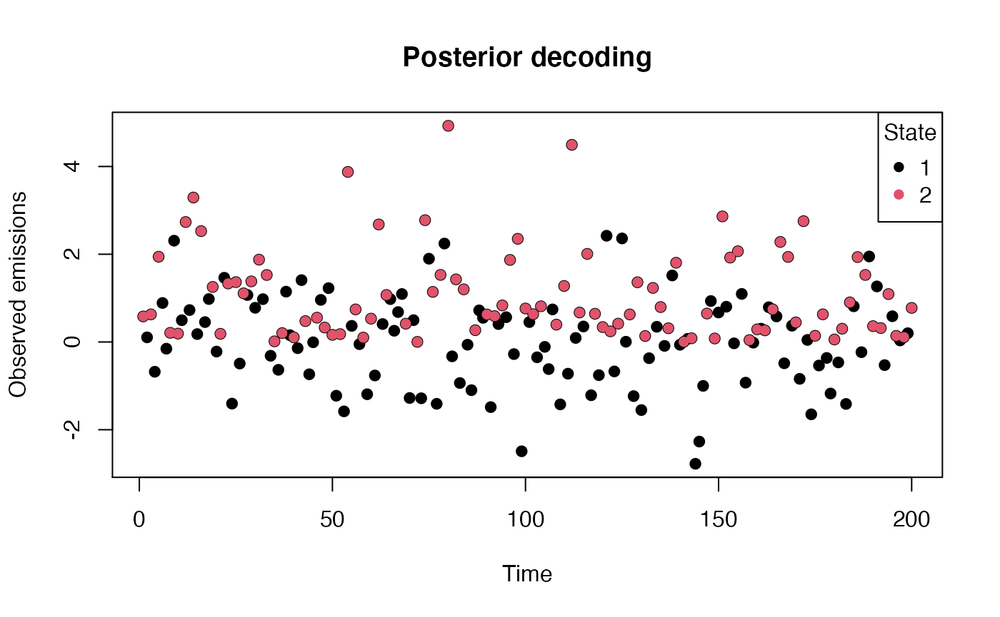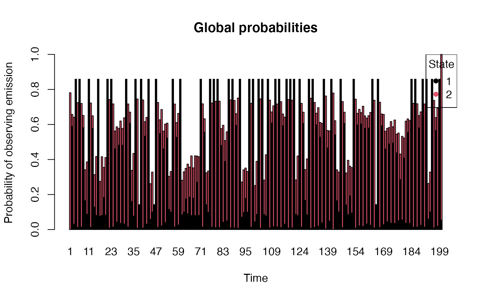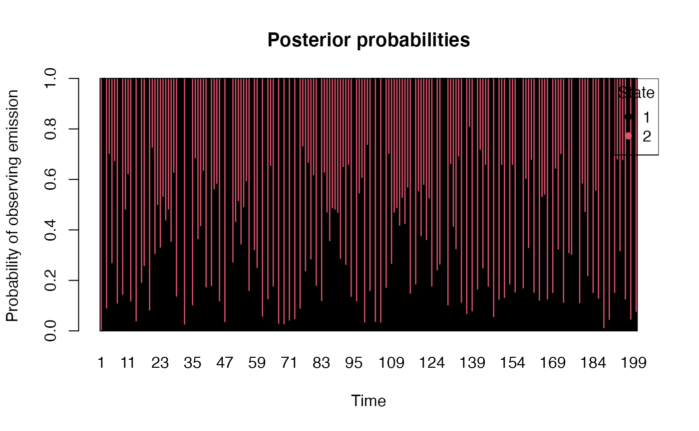